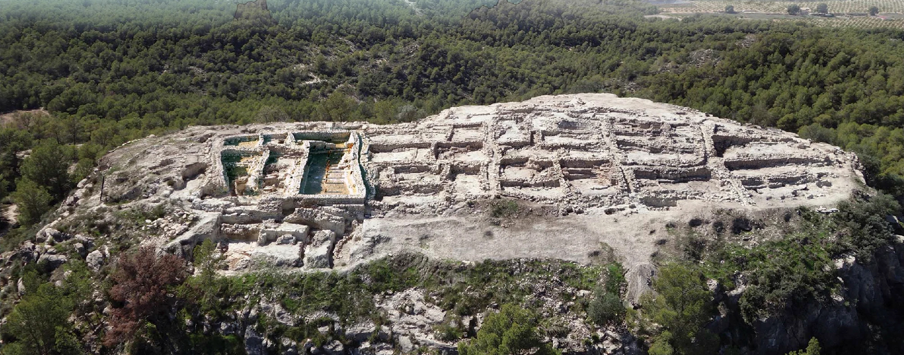

Introducción a la Almoroya
La Almoloya es un yacimiento arqueológico perteneciente a la Cultura argárica, situado en el municipio de Pliego, en la Región de Murcia, España, cuya cronología se desarrolla en plena Edad del Bronce, entre el III y II milenio a. C., (años 2200-1550 a. C.). Asentado en el cerro epónimo, su ocupación se desarrolló a lo largo de 600 años. Se considera uno de los asentamientos más importantes de dicha cultura. El yacimiento fue dado a conocer en 1944 por Emeterio Cuadrado. En el año 2013 empezaron los nuevos estudios sobre el lugar, en el marco del proyecto de investigación arqueológica de La Bastida de Totana.1
